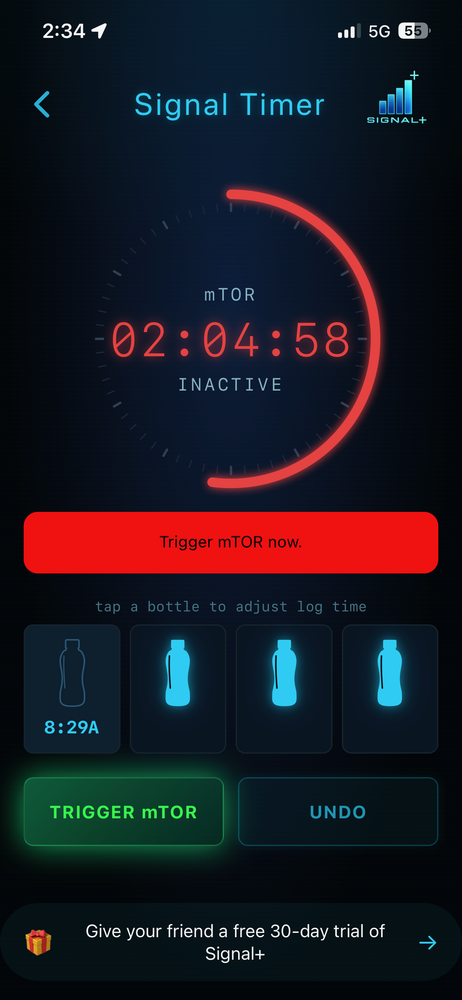
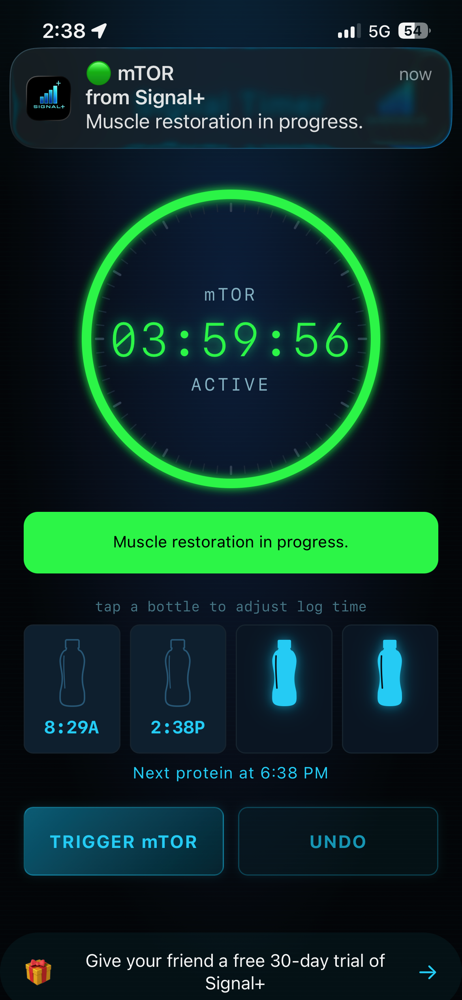
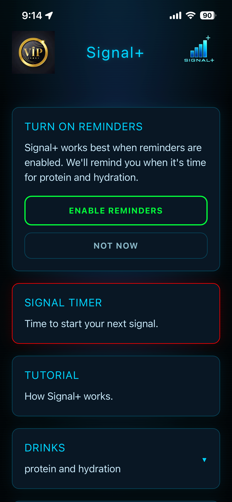

What Signal+ Isn't
Signal+ is not a diet app.
It doesn't count calories.
It doesn't tell you what to eat.
It simply helps you time your protein so your muscles get what they need, when they need it.
Simple reminders help you stay on track throughout the day.
Eat normally. Add the protein. That's it.
How Signal+ Works
Muscle does not maintain itself.
Every day your body breaks down muscle tissue. mTOR is your body's natural muscle restoration process. When protein triggers mTOR, your body begins repairing and building new muscle protein.
Signal+ uses a simple color system to show where you are in that process.
Red — The restoration process is complete. Your body is ready for the next protein trigger.

Green — Your muscle restoration process is underway.

Using Signal+
GLP-1 users and older adults often experience reduced appetite, making it harder to preserve muscle.
Signal+ helps you make the most of your body's natural muscle restoration process.
- When your timer turns red, drink a protein drink and tap Trigger mTOR to start a fresh timer.
- Need to adjust a log time? Tap the bottle to edit it.
- Need to remove a log? Tap the Undo button above the bottle.
Reminders
Reminders are the heart of Signal+.
Enable them in Settings to get the most from the app.
- 8:00 AM Reminder — A gentle reminder to trigger mTOR if you haven't logged protein yet today.
- Green and Red Timer Reminders — Know when your restoration process starts and when you're ready for the next trigger.
- Hydration Reminders — Optional reminders at 10:00 AM, 2:00 PM, and 6:00 PM to help you stay hydrated when appetite is low.

Profile
Manage your account and preferences.
- Preferred name
- Sex
- Date of birth
Subscription management is also available in Settings.
Contact
Need help?
Email support@signalplushealth.com, and we'll get back to you as soon as possible.